← All work / Project 03
ES 125 Mechanical Systems · Fall 2025
Egg Drop Suspension
A two-layer suspension of twelve spring-dampers, angled like lander legs, designed to protect a raw egg in drops of up to 20 feet.
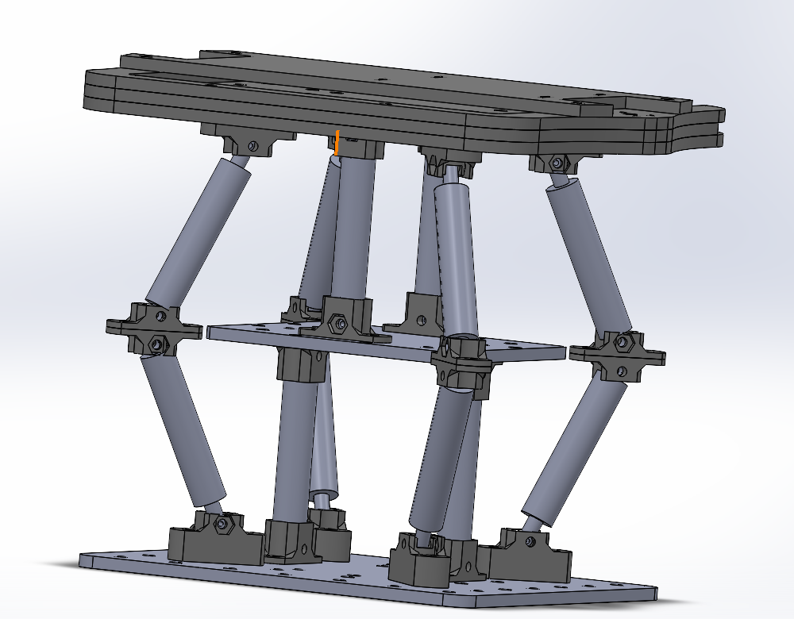
01 / The brief
Land the egg, lightly and low.
An egg rides in a carriage that falls down vertical rails, and the suspension we designed hangs underneath it as landing gear. A wireless sensor records the peak acceleration on impact. The score rewards a higher drop, a lower peak acceleration, and a lighter, shorter device, and it's zero if the egg cracks.
Everyone got the same kit: 12 RC-car shocks, a spring set, three silicone oil weights, a few sheets of plywood and ¼-20 hardware. Each device got up to three drops with no repairs in between, so it had to survive every landing.
02 / The idea
Borrowed from a moon lander.
Each shock only travels about 1.3 inches, so we needed more stopping distance than one layer could give. We stacked two layers of six shocks each. In every layer, four shocks sit at 30° and two point straight up. On impact the straight shocks compress, while the angled ones swing outward like a lander's legs, which spreads the landing over a longer time. Rubber bands across the angled legs keep the stack from wobbling sideways.
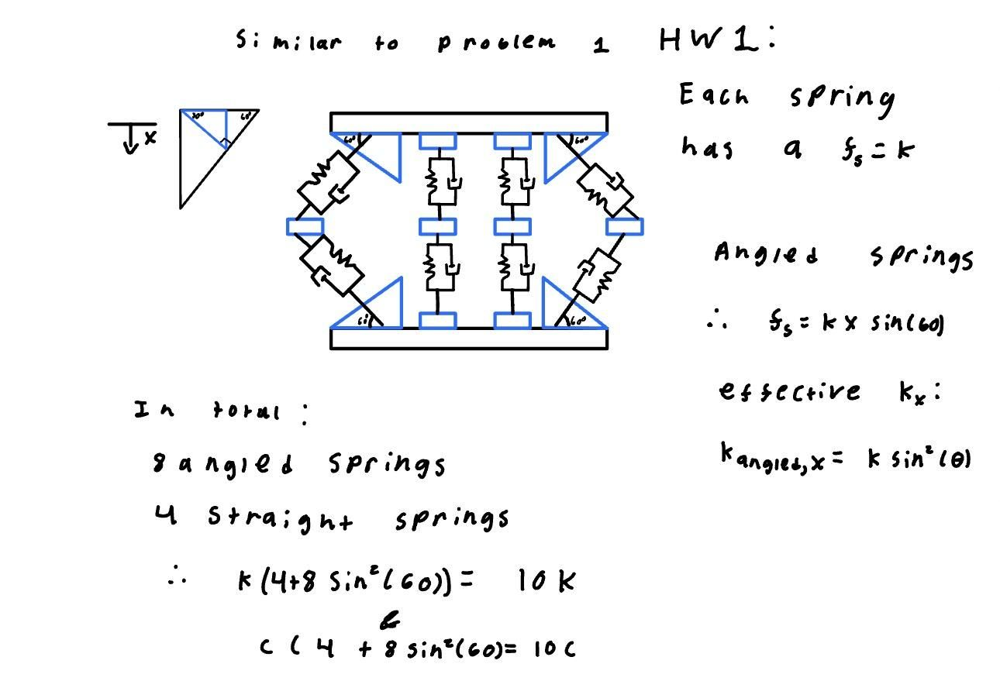
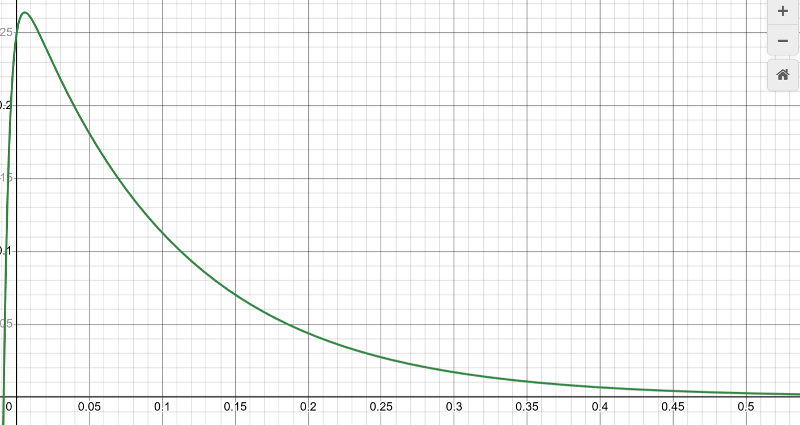
03 / The analysis
One effective spring, one effective damper.
The brief asked for the device's stiffness and damping as a single unit. An angled shock only resists vertical motion with part of its stiffness, which scales with sin²θ. Adding up the eight angled and four straight shocks gave an effective stiffness of about ten single springs.
With keff = 4370 N/m, ceff = 480 N·s/m and a 2.14 kg device, the natural frequency is 45.2 rad/s and the damping ratio is about 2.5. The system is overdamped on purpose: it soaks up the impact without rebounding and hitting the egg a second time.
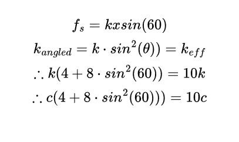
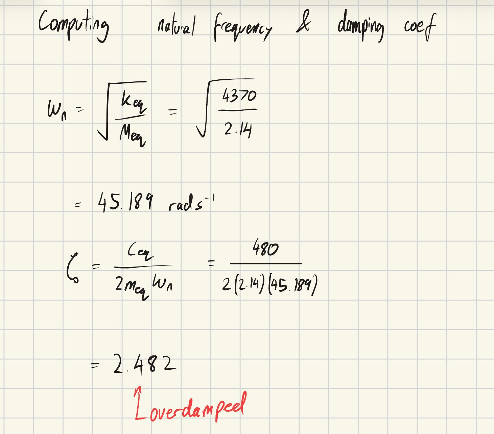
04 / CAD
Custom joints for angled shocks.
Angling the shocks took mounts that weren't in the kit. I modeled the full assembly in SolidWorks, and we designed slanted attachments and connectors in Fusion 360 so the shocks could sit at 30° and pivot outward on impact.
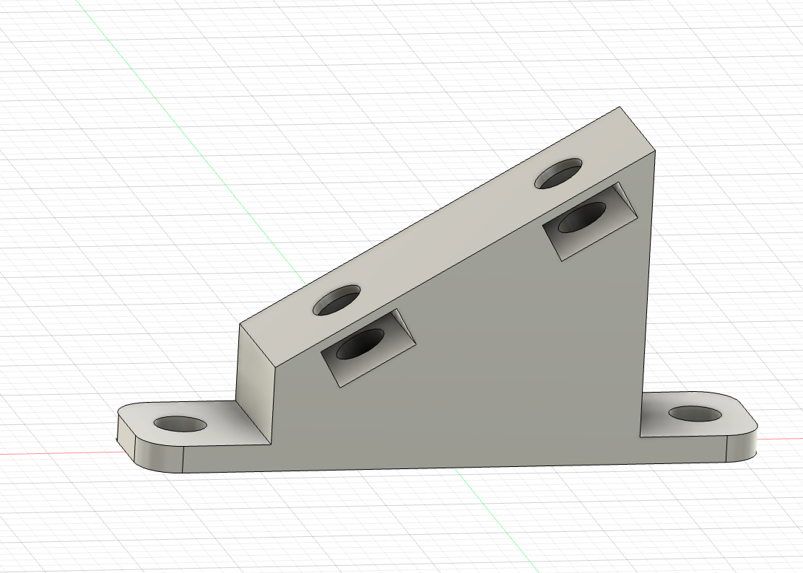
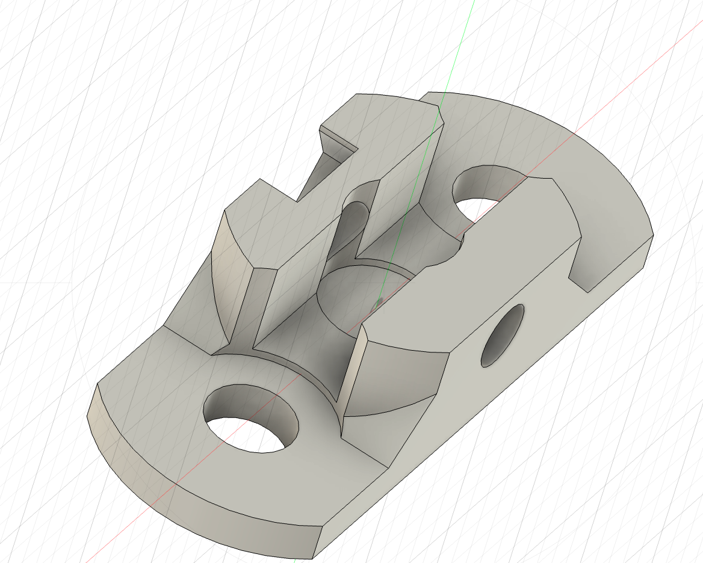
05 / The build
From model to makerspace.
We built two plywood layers with the shocks bolted between them. The finished device weighed 2.14 kg.
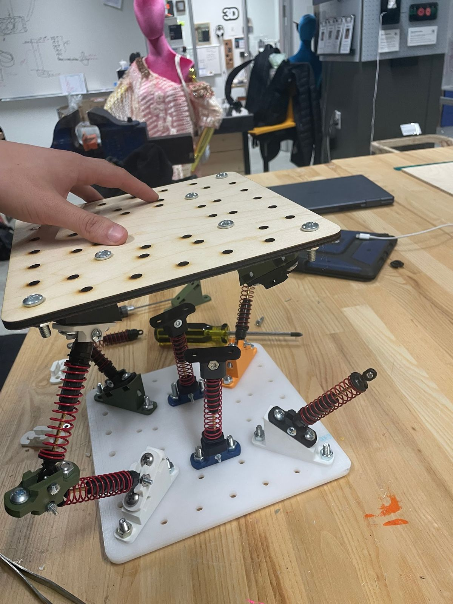
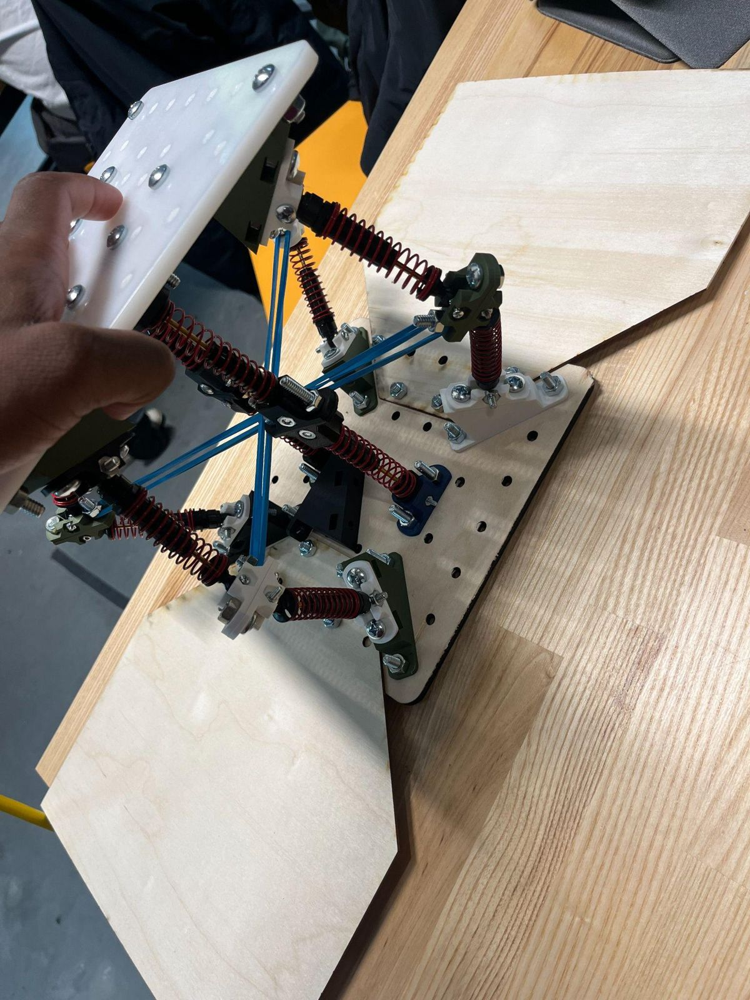
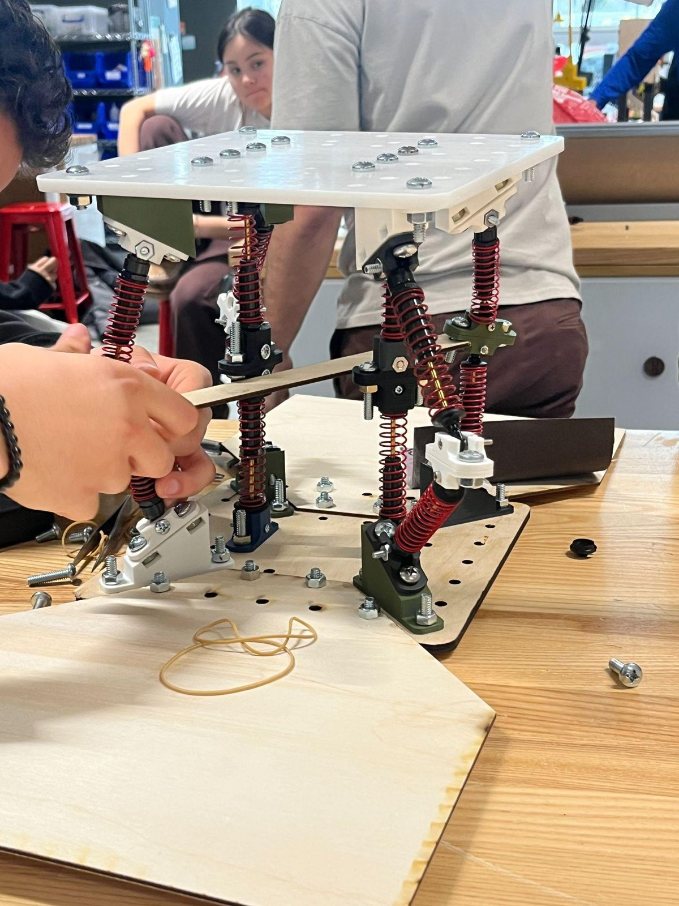
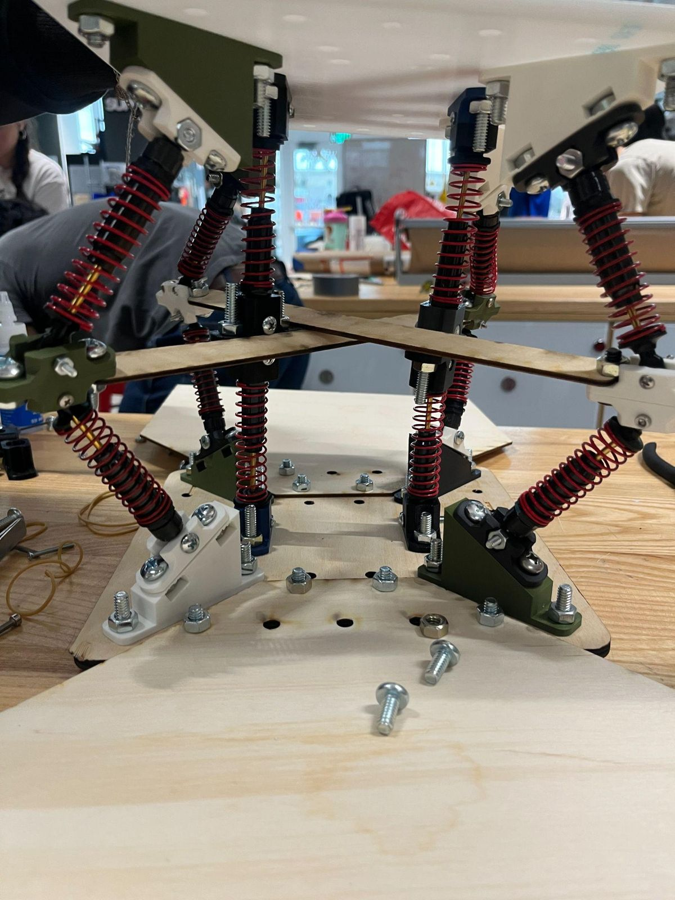
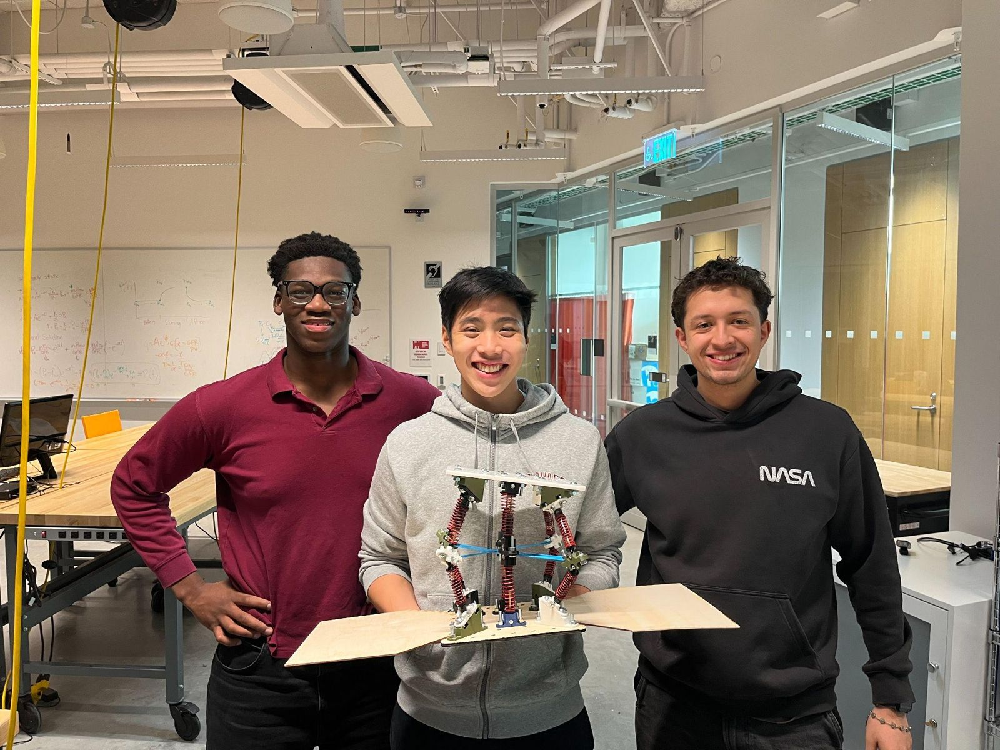
06 / What I owned
The model the team built from.
- CADModeled the full suspension assembly in SolidWorks, including the plates, shock layout and angled mounts.
- ReportWrote the pre-competition design report: design reasoning, team roles and the build timeline.
- TeamJacob Gokongwei led machining and Mansour Doumbia led the presentation. We all pitched in on the build and testing.